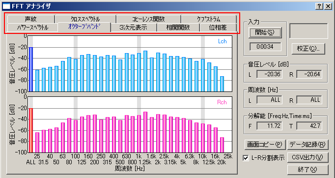

DSSF3 > RA > リファレンス > FFTアナライザ

| 項目 | 説明 |
|---|---|
| パワースペクトル | 周波数に対する音圧レベルを表示します。 |
| オクターブバンド | オクターブバンドごとのエネルギーレベルを表示します。 |
| 3次元表示 | 周波数とエネルギーレベルに、時間を加えて3次元で表示します。 |
| 相関関数 | 音響信号の自己相関，相互相関を表示します。 |
| 位相差 | 左右のチャンネル間の位相差を周波数ごとに表示します。 |
| 声紋 | スペクトルの時間変化を時間と周波数の2次元で表示します。ある時間・周波数におけるエネルギーをレインポーカラーまたはグレースケールで表します。 |
| クロスベクトル | 左右のチャネル間のクロススペクトルを表示します。クロススペクトルは、相互相関関数をフーリエ変換したものです。 |
| コヒーレンス関数 | 左右のチャネル間のコヒーレンス関数を表示します。コヒーレンス関数は、クロススペクトルの絶対値の自乗をパワースペクトルで割算したものです。 |
| ケプストラム | ケプストラムを表示します。ケプストラムは、パワースペクトルを対数に変換し、さらに逆フーリエ変換したものです。 |
DSSF3 > RA > リファレンス > FFTアナライザ